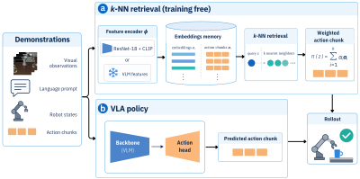
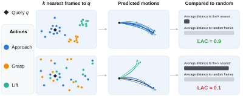

What does a benchmark score tell us?
VLAs now score above 95 % on LIBERO. But a success rate on its own says little: it depends on how closely the test conditions resemble the demonstrations.
We test how far retrieval alone gets, then use it to analyze nine public VLAs:
- How much of LIBERO can retrieval solve?
- What does fine-tuning change in the backbone and the action head?
- Can we score a retrieval key without running rollouts?
k-NN as a training-free policy

- Memory: frames from the 1,693 LIBERO demonstrations, each stored with the action chunk that follows it.
- Retrieve the k nearest frames and execute a weighted average of their action chunks:

- Swap in a VLA's VLM backbone as the encoder to evaluate it separately from the action head.
Retrieval reaches 91.7 % on LIBERO and drops the least under perturbation
Success rate (%). LIBERO: 2,000 episodes. LIBERO-Plus: the same 420 variants.
- With no learned policy, k-NN matches π0-FAST on LIBERO.
- On LIBERO-Plus, the multimodal k-NN beats 7 of the 9 VLAs.
What does retrieval need?
LIBERO success (%) after removing or replacing one component:
The demonstrations, the image embeddings and the language prompt matter most.
Retrieval separates the VLM backbone from the action head
We swap the ResNet features for each VLA's own VLM features, before and after LIBERO fine-tuning.
Success rate (%). vs VLA: k-NN after fine-tuning minus the full VLA, in %pt. *Frozen VLM.
- When k-NN beats the full VLA (by up to 48 %pt), the action head is leaving useful information in the backbone unused.
What LIBERO fine-tuning does to the backbone
Why can k-NN on a backbone outperform the full VLA? Fine-tuning reshapes the backbone:
t-SNE of the retrieval keys for 4,150 demonstration frames, colored by episode progress. Below each map: LAC@8.
- Better retrieval under perturbation for 7 of 8 fine-tuned VLAs.
- Less scene-dependent: nearest neighbors also become closer in task progress for most models.
- One exception, π0: representations collapse into task clusters, and k-NN success drops from 86.9 % to 17.9 %.
VLA actions stay close to the demonstrations
We compare each VLA's action chunks from its LIBERO rollouts with the training demonstrations. Held-out demonstrations serve as the baseline.
- k-NN predicts the actions of 5 of 8 VLAs better than it predicts held-out demonstrations.
- All 8 VLAs are closer to a training action chunk than held-out demonstrations are.
Local Action Consistency (LAC)

An offline metric: do a frame's k nearest neighbors Nk(q) also have similar future action chunks, compared with other frames C(q) from the same task?

LAC tracks retrieval success
Each point is one visual encoder. Retrieval uses its image features only, within the instructed task.
- Correlates with closed-loop k-NN success (Pearson r = 0.78).
- Trains a better key: ResNet k-NN rises from 88.7 to 93.0 %.